Apple's container runs every Linux container in its own lightweight VM, natively on Apple silicon. Container Deck puts all of it in one place, from the first install to the last log line.
Fast
Talks to Apple's container service directly over XPC. Lists take about 4 ms and live stats about 20 ms. The container command is the automatic fallback.
Native
SwiftUI, SF Symbols, Light and Dark, keyboard first, menu bar control. No Electron, no web view, no account.
Light
An 8 MB download, about 20 MB installed. No server and no daemon of its own.
Honest
Every action can show the exact container command it runs, so you can learn it or put it in a script.
Private
No analytics and no tracking. API keys and registry passwords live in your Keychain.
Up to date
A first run guide installs Apple's platform, and the app updates itself from signed releases.
Features
Everything Apple's container can do, in one window
Containers, images, builds and Compose. Machines, Kubernetes, domains, local AI and MCP servers. All of it native, all of it on your Mac.
Containers and images
Run, watch and fix containers without leaving the window
Run, stop, restart, delete and recreate. Recreate never loses the old container, it comes back if the new one fails. Live CPU, memory, network and disk charts keep their history between launches.
Logs with search
File browser
Mounts
Shell in your terminal
Pull with progress
Docker Hub search
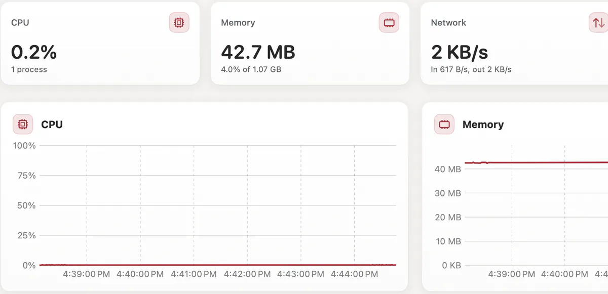
Builds
Every build, with its live log
Build from any Dockerfile and follow the BuildKit log. Run several at once, stop, rebuild, and keep the history across restarts. See the build cache size and clean it up.
History across restarts
Several at once
Build cache clean up
Machines
Linux VMs that feel at home
Lightweight Linux machines with your Mac user and home folder, live stats, and Apply and Restart.
Your Mac user
Home folder
Live stats
Compose
Your compose.yaml, in the app and in Terminal
Healthchecks, profiles, depends_on conditions, hooks, per service logs and re-up of only what changed. A Problems tab points to the exact line, and container compose runs the same engine in Terminal.
Sees every MCP server already set up on your Mac, browses the MCP Registry and Docker's catalog, runs servers as containers, and connects them to Claude Code, Claude Desktop, Cursor, VS Code, Codex and Gemini. You get a preview, a backup and Undo.
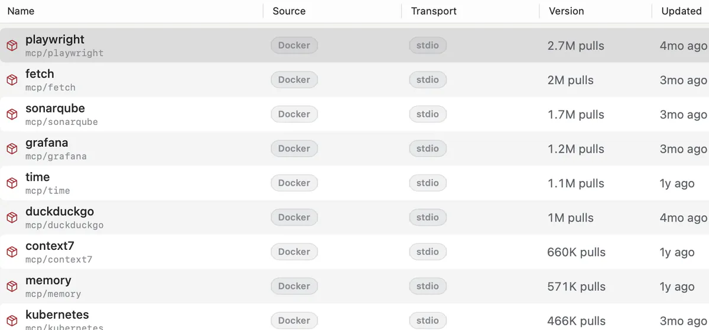
Domains and sharing
HTTPS for every container, and a link to share it
Open https://<container>.localhost through a built in proxy with its own certificate authority. Add aliases, reach this Mac by name, and share a route through Cloudflare Tunnel, ngrok or Tailscale Funnel.
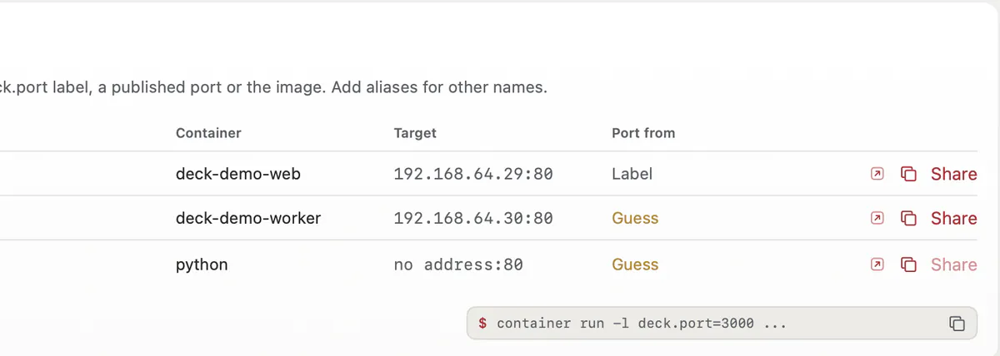
Kubernetes Preview
Local clusters to try manifests
Clusters on container cluster with nodes, kubeconfig, workloads, live pod logs, restarts and port forwards. Networking is repaired after a stop and start.
Workloads
Pod logs
Port forwards
Networks and volumes
Create, browse and clean up
Networks and volumes with sizes and inspect, including host only networks.
Sizes
Inspect
Host only networks
AI on your Mac
Local models and safe sandboxes for agents
Finds Ollama, LM Studio and MLX servers, downloads models from Hugging Face with resume, and chats with them. Sandboxes give AI agents a workspace folder, CPU and memory limits, an allow list of sites and a kill switch.
New in 1.1 LM Studio support, saved chats, agent profiles and sessions.
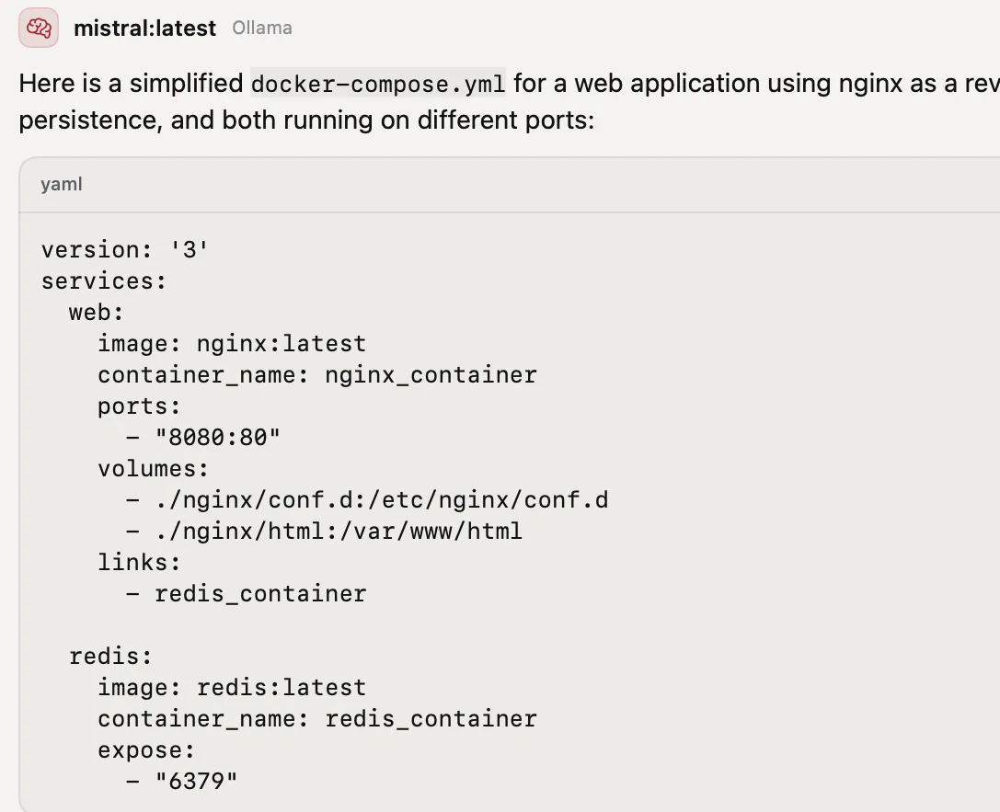
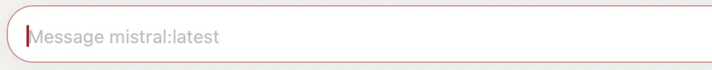
Command palette
Press ⌘K and type what you want
"stop db", "logs api" or "pull redis:7". Every screen also has a link, such as containerdeck://logs/web,db.
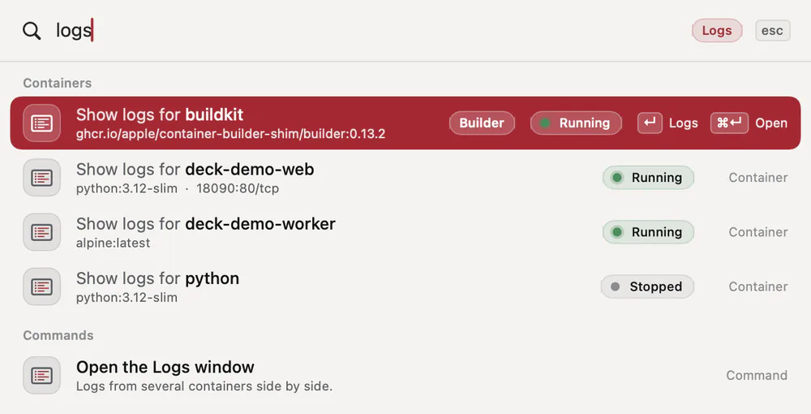
Menu bar
Service status, usage rings, and start and stop for each container. Opens at login if you like.
Import
Bring images over from Docker Desktop, OrbStack, Rancher Desktop, Podman and Colima, even when they are stopped.
Notifications
A stack that is up, a pull or build that finished, a container that stopped on its own.
Logs window
Logs from several containers side by side, with search.
Organize
Group by Compose project or label, act on many at once, export to tar, commit to an image.
Registries
Sign in to any registry inside the app. Passwords stay in your Keychain.
Diagnostics
Versions, backend and recent errors, copied into a bug report in one click.
Deep links
Open any screen with a containerdeck:// link, from scripts or notes.
Take a look
A closer look at the app
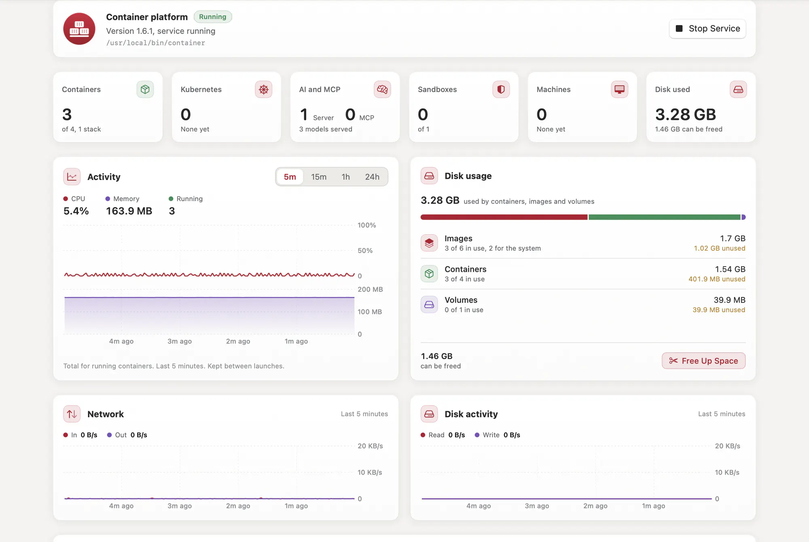
Containers, Kubernetes, AI and MCP, sandboxes and machines at a glance, with activity from 5 minutes to 24 hours and disk use.
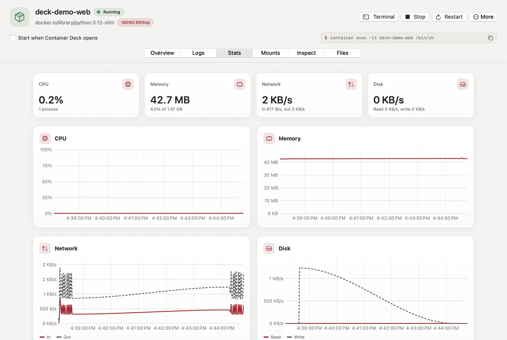
Each container has Overview, Logs, Stats, Mounts, Inspect and Files, and shows the command for a shell.
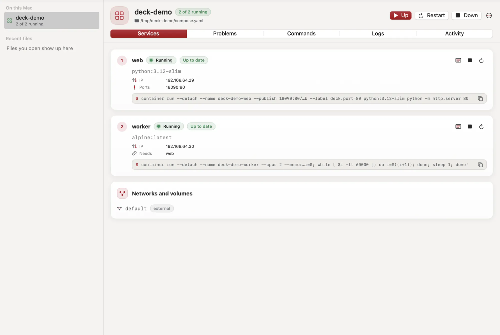
Every service with its state, address, ports and the exact command, plus Problems, Logs and Activity.
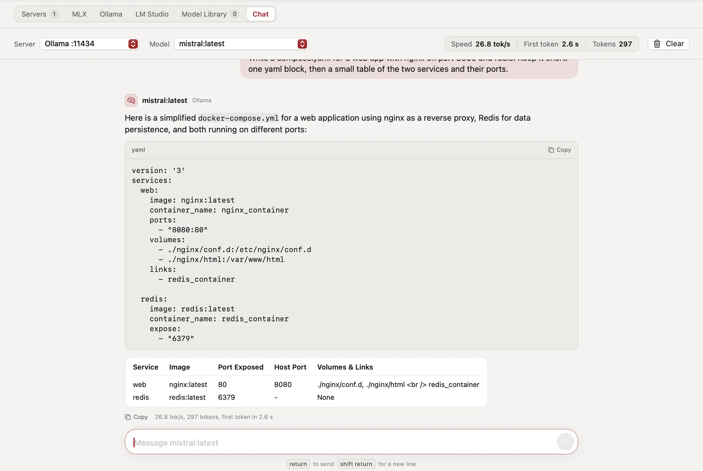
Chat with models from Ollama, LM Studio or MLX, with code blocks, tables and speed for every answer.
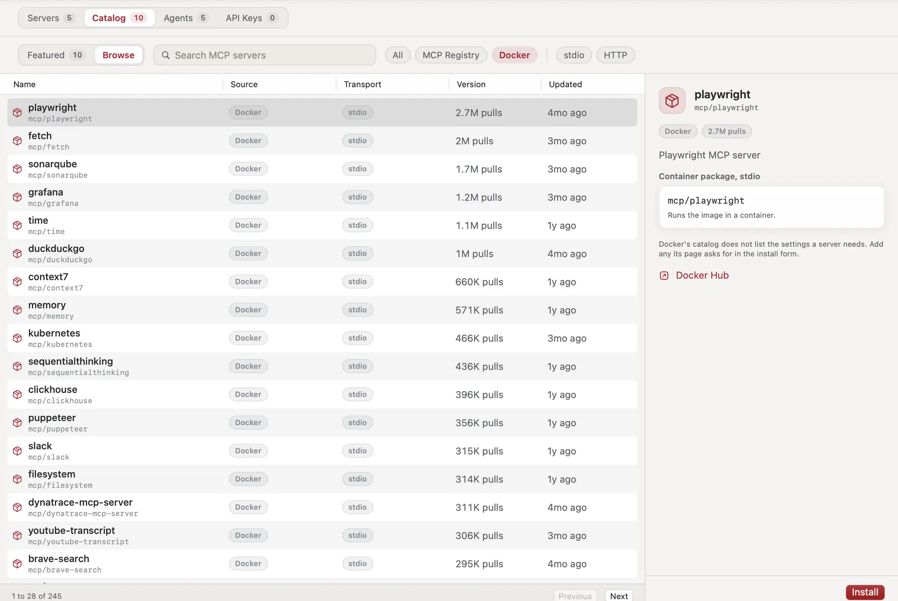
Browse the MCP Registry and Docker's catalog, then run a server in a container and connect your agents.
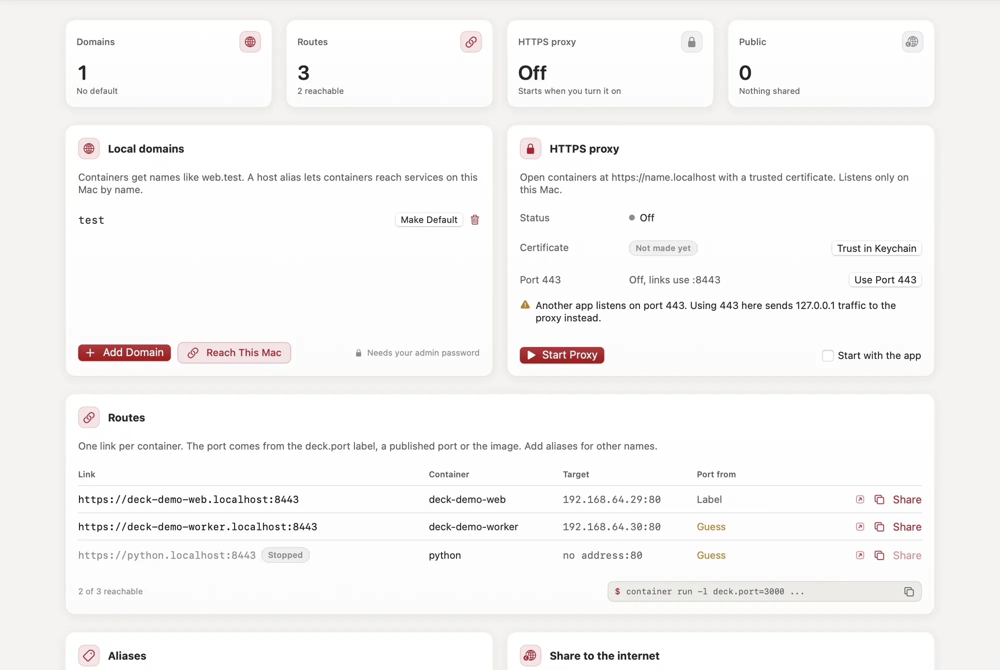
Local names, the HTTPS proxy, a route for every container, aliases and sharing to the internet.
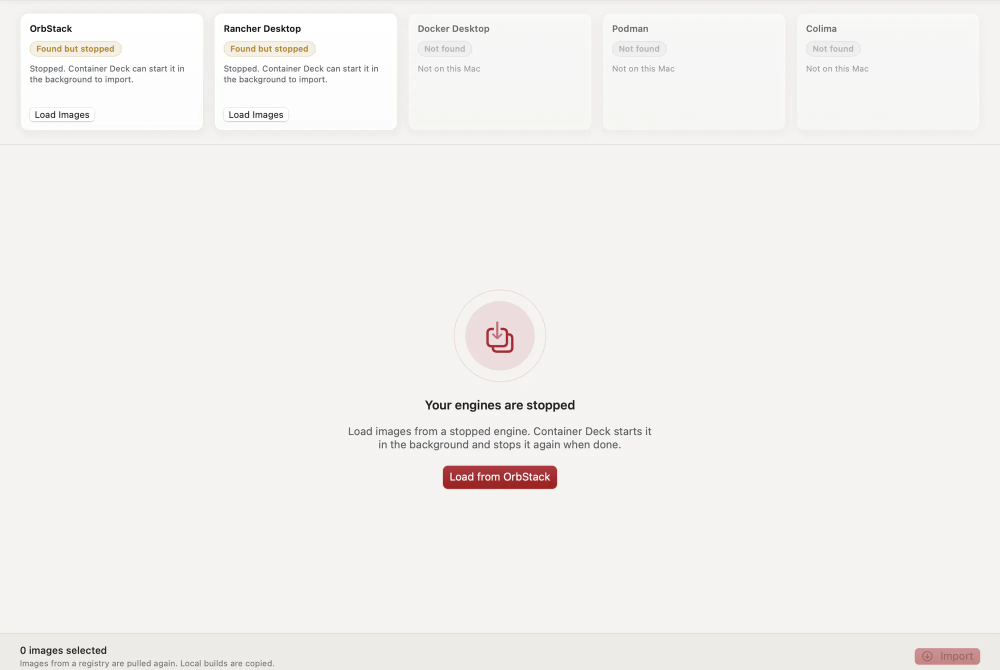
Finds Docker Desktop, OrbStack, Rancher Desktop, Podman and Colima, and loads images even while they are stopped.
Compare
Container Deck, Davit and Orchard
Davit and Orchard are good, free apps for the same platform, and both are worth a look. Here is how the three compare today.
YesPartlyNo
Features of Container Deck, Davit and Orchard
Feature
Container Deck
Davit
Orchard
Platform
macOS version
15 or later
15 or later
26 only
Talks to Apple's container service directly
Partly. Lists, stats, start and stop, logs, images, volumes and networks. Run, build and pull use the CLI.
Yes
Partly. Most calls. System start and stop, the builder, DNS and clusters use the CLI.
Falls back to the container CLI
Yes
No
No
Containers and images
File browser in containers
Yes
Yes
No
Registry sign in inside the app
Yes
Yes
No. Shows a CLI command to copy
Build history
Yes
No
Yes
Multi pane logs
Yes
No
Yes
Import from other engines, even stopped
Yes
No
No
Compose
Healthchecks and profiles
Yes
Yes
No
depends_on conditions
Yes
Yes
Partly. Start order only. Health and completion conditions are refused.
Hooks
Yes
No
Partly. The container compose plugin runs them. Orchard's Compose tab does not.
Compose in Terminal
Yes.container compose with up, down, ps, logs, exec, start, stop, restart, pull and config
Partly. Its own Davit compose command, not container compose
Partly.container compose with up and down only
Beyond containers
Machines
Yes
Partly. Create, start, edit CPU and memory, logs and stats. No nested virtualization, kernel or account options.
Yes
Kubernetes clusters
Yes
No
Partly. Clusters, nodes, CNI, image loading and kubeconfig. No workloads view, pod logs or port forwards.
Local AI models
Yes
No
Partly. Finds model servers, runs the MLX server, chat tester. No model library or downloads.
Sandboxes for AI agents
Yes
No
Partly. Lists sandboxes with isolation badges and a kill switch. A separate app creates them.
MCP servers and agent connections
Yes
No
No
Local domains
Yes
Partly. Create domains and set the default. No aliases.
Yes
HTTPS proxy and internet sharing
Yes. Cloudflare Tunnel, ngrok or Tailscale Funnel
No
No
Everyday use
Notifications
Yes
Partly. Unexpected stops only
No
Open at login
Yes
Yes
No
Command palette with verbs
Yes
Partly. Search only, no verbs
Yes
Menu bar
Yes
Yes
Yes
Distribution
Signed updates
Yes
Yes
Yes
Notarized by Apple
No. Signed with our own certificate
Yes
Yes
Install
One line in Terminal, DMG or installer package
Homebrew or DMG
Homebrew or DMG
License
Apache 2.0 with Commons Clause
MIT
MIT
Price
Free
Free
Free
Checked on 6 November 2026 against Davit 0.1.39 and Orchard 2.6.1, from their websites and source code. If something here is out of date, please open an issue and we will fix it.
Coming from Docker
Keep your Docker habits
Years of docker run are hard to unlearn, and you do not have to. Shell aliases and a small docker command translate the common commands to Apple's container, for your terminal, scripts and Makefiles.
Apple's platform does not offer the Docker Engine API, so tools that talk to the Docker socket directly still need Docker.
$ export DOCKER_SHIM_DEBUG=1
$ docker run --rm -p 8080:80 nginx:alpine
+ container run --rm -p 8080:80 nginx:alpine$ docker ps -a
+ container list --all$ docker logs -f --tail 50 web
+ container logs --follow -n 50 web
Install
Install in a minute
Any Mac with Apple silicon and macOS 15 or later. If Apple's container platform is not on your Mac yet, the app installs it on first launch.
One line in Terminal
Any Mac
Installs into Applications, or into Applications in your home folder when you cannot write to the main one. No admin password and no security prompt, so it also works on a company or school Mac.
It downloads the disk image from the latest release with curl, copies the app out of it and opens it. Files fetched this way carry no quarantine flag, so macOS does not ask.
Disk image or package
Personal Mac
Download the .dmg and drag Container Deck to Applications, or open the .pkg installer.
Open the app once as shown below.
First launch, once
Releases are signed with the Container Deck certificate but not notarized by Apple. The first time you open a downloaded copy, macOS says it cannot check it.
Click Done in the message.
Open System Settings, then Privacy & Security.
Next to "Container Deck was blocked", click Open Anyway and confirm.
Every release ships a .sha256 file next to the disk image and the package. Run this in the folder with the file. After install the app updates itself and checks each update's Ed25519 signature before it installs it.
For a specific version, replace latest/download with download/ and the release tag, as listed on the releases page.
curl -fsSLO https://github.com/sur950/container-deck/releases/latest/download/ContainerDeck.dmg.sha256
shasum -a 256 -c ContainerDeck.dmg.sha256
For a lot of daily work, yes: running images, Compose stacks, builds, volumes, networks and logs. Apple's platform is not a Docker engine, though. There is no Docker socket, and some Compose keys and Docker flags have no match yet. If a tool you depend on needs the Docker API, keep Docker for that tool. Import brings your images over when you are ready.
Can I keep typing docker commands?
Mostly. The Docker compatibility guide has shell aliases and a docker command that translate the common commands to Apple's container. It also lists what does not translate.
Why is it not notarized?
Notarization needs a paid Apple Developer Program membership, which this free project does not have. Releases are signed with our own certificate instead, ship SHA-256 checksums, and updates carry an Ed25519 signature that the app checks before installing. The one line Terminal install skips the security prompt without turning anything off.
Does it phone home?
No. There is no analytics, no crash reporter and no account. The app contacts GitHub to check for releases and load the project numbers on the About page. Everything else happens only when you ask, such as a Docker Hub search, an image pull, a model download or sharing a route to the internet. Your containers, logs and files never leave your Mac through the app.
Do I need macOS 26?
No. Container Deck runs on macOS 15 and later. Apple's platform has fewer networking limits on macOS 26, so we recommend it, but the app works on both.
How much memory does it use?
The app itself uses about 200 MB of memory with the window open, settles at around 1% CPU, and takes about 20 MB on disk. While no screen is showing, it polls every 10 seconds and starts no processes. Your containers are the bigger cost: Apple runs each one in its own small VM, which uses memory only while it runs.
How complete is Compose support?
Container Deck reads compose.yaml with its own parser, in the app and in container compose.
Works: services, images and builds, ports, volumes, .env and variable interpolation, profiles, all depends_on conditions, post_start and pre_stop hooks, entrypoint, user, capabilities, tmpfs, ulimits, several -f files, include and extends. Commands: up, down, ps, logs, exec, start, stop, restart, pull and config.
Partly: healthchecks hold back dependents but ps shows no health. One network per service. CPUs round up to whole numbers. A port without a host port gets the same number on the Mac. Services find each other by name through /etc/hosts, which needs a shell in the image.
Not supported: restart policies, replicas, secrets and configs, privileged mode and devices, host networking, the run and build commands, and up --wait.
Keys it cannot honor appear in the Problems tab and in container compose config with their line number. The full checklist is in Coming from Docker Compose.
Is Kubernetes ready for real work?
Treat it as a preview. Clusters run on container cluster, which Apple still marks as experimental. It is great for trying manifests and charts on your laptop. For anything that matters, keep a regular cluster.
Is it safe to let it edit my MCP and agent settings?
Every change shows a preview of the exact lines first, saves a backup of the file, and can be undone. API keys go into your Keychain, not into config files. MCP servers you run through the app live in containers, so they only see the folders you give them.
Does it work on Intel Macs?
No. Apple's container platform needs Apple silicon, so Container Deck does too.
How do I uninstall it?
Quit the app from the menu bar and drag Container Deck from Applications to the Trash. Your containers, images and volumes belong to Apple's container platform and stay where they are. Settings live in ~/Library/Preferences/io.github.sur950.containerdeck.plist and ~/Library/Application Support/io.github.sur950.containerdeck. Delete them for a clean start. If you installed with the package, sudo pkgutil --forget io.github.sur950.containerdeck.pkg also clears the install receipt.